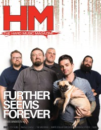

Further Seems Forever
 May 2003 HM |
 October 2012 HM |
Media coverage
- Mar 2001 in HM "Further Seems Forever", by Katherine L Gutwein
- Jan 2003 in HM "Further Seems Forever"
- Jan 2003 in HM "Poster: Further Seems Forever"
- Mar 2003 in 7ball "Sticking Together When The Chips Are Down", by David Drury
- May 2003 in HM "Further Seems Forever", by Adam Robinson
- Jun 2003 in CCM "Furthering The Fire", by David McCreary
- Mar 2004 in HM "Hardnews: Further Seems Forever Lose Gleason"
- Mar 2004 in CCM "The Verdict Is In: 'Rock & Roll Is Here To Stay'", by Anthony DeBarros
- Sep 2004 in HM "Further Seems Forever", by James Wertz
- Mar 2006 in HM "Hardnews: Quick & Concise: Further Seems Forever"
- Oct 2012 in HM "Timing", by Bear Frazer
Albums & reviews:
2003: How to Start a Fire
- Mar 2003 in 7ball, by David Drury
- Mar 2003 in Relevant, by Jeremy Hunt
- Mar 2003 in HM, by Kriss Stress
2004: Hide Nothing
- Sep 2004 in Relevant, by Chris Neiger
- Sep 2004 in HM, by Eric W Alexy
- Nov 2004 in CCM, by Andy Argyrakis
2006: Hope This Finds You Well
2007: The Final Curtain
Award Summary (Nominations / Wins)
Dove Awards- 2005 Dove Awards
- Short Form Music Video: "Light Up Ahead"
Books about Further Seems Forever
- "Further Seems Forever" in The Encyclopedia of Contemporary Christian Music (Mark Allan Powell, 2002).
© 2011 CMnexus. Last updated August 2025. Contact: editor -AT- cmnexus -DØT- org